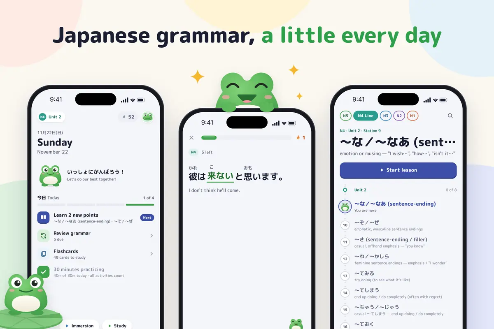
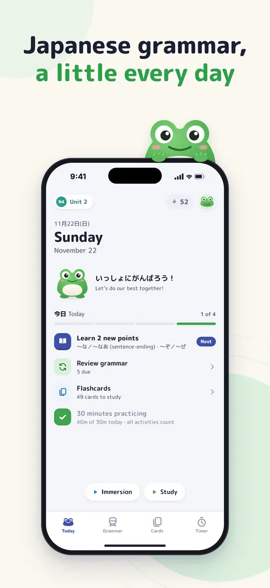
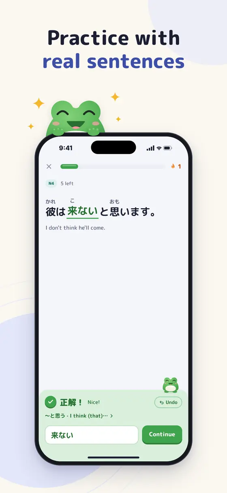
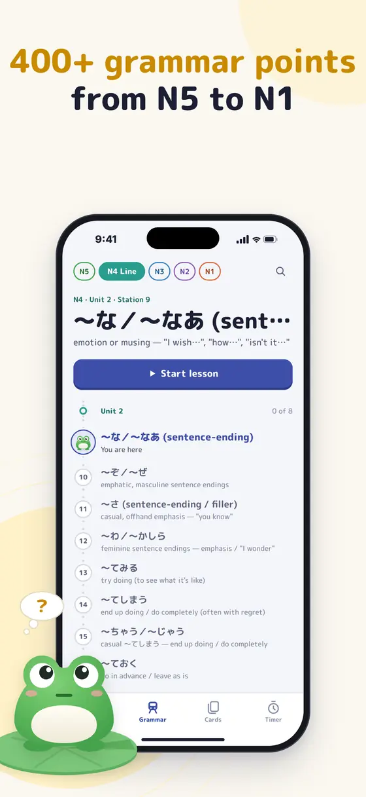
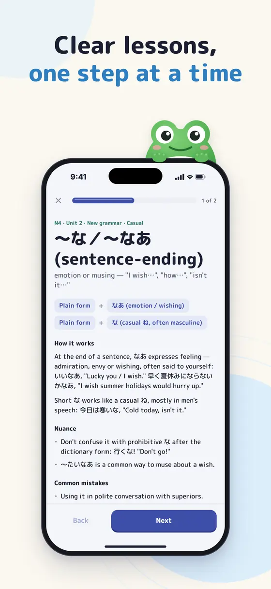
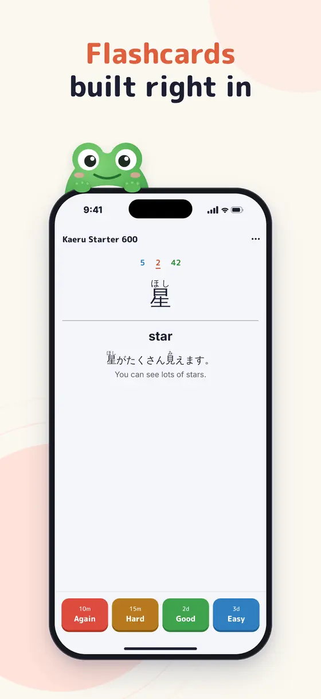
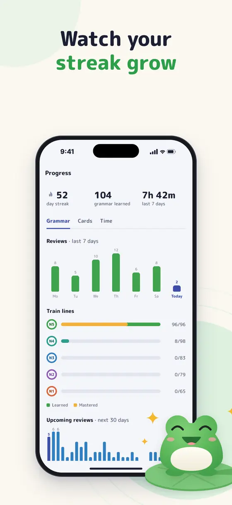
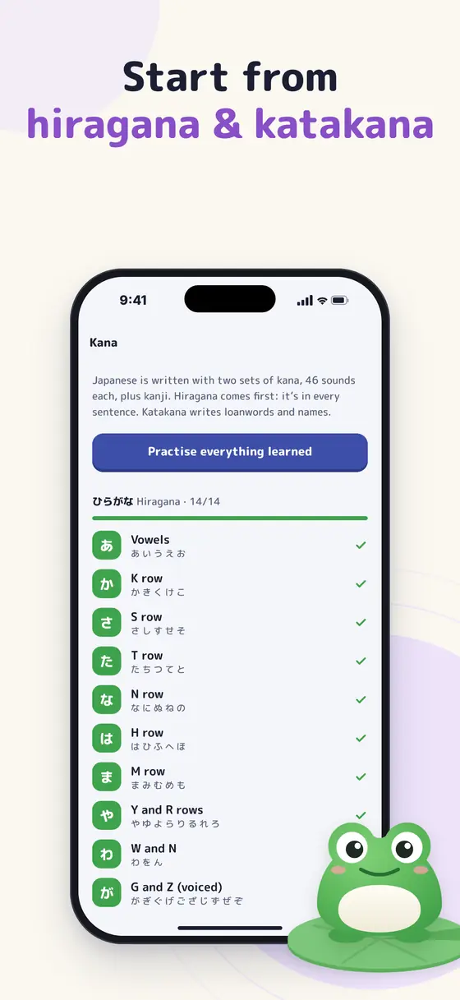
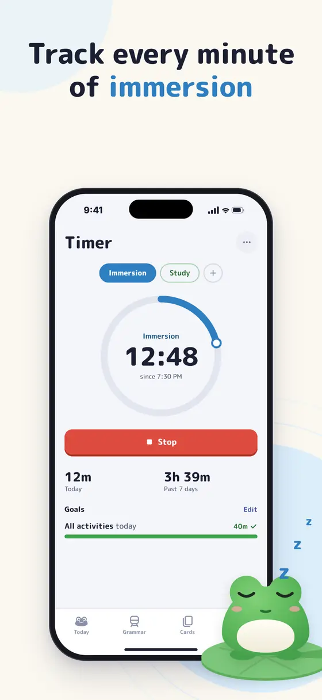

Theo Leone
Latest dispatch — github.com/theoleone10
I build apps for small daily routines, and the systems that keep them running.
Applied math and computer engineering at Queen’s. Two iOS apps shipped solo, a platform for funeral homes, and federated learning research with QMIND.
Open the paper →
Every story in this edition has something you can try.
Build a morning brief, book a cremation from both sides, answer a Japanese grammar card, or train a model whose data never leaves its owners. Each project’s right-hand page is the thing itself, with the video and the real code a tab away.
Turn pages with the arrows beside the paper, the section names up top, or your keyboard.
Swipe, or tap the edge of the page, to turn it. The ☰ menu has the contents.
In this edition
- Studying
- Applied Math & Computer Eng., Queen’s ’28
- Mostly in
- TypeScript, React Native, Node, Postgres
- Shipping
- Kaeru & Paperboy, two iOS apps
- Status
- Open to internships & co-ops
Theory in class, and on my own time, shipping things people actually open every day.
I study Applied Mathematics & Computer Engineering at Queen’s. In class that means algebra, control theory and distributed algorithms. Most of what I know about building software came from making tools I wanted to exist, then carrying them past the demo: auth, sync, tests, privacy policies and App Store review.
I care about code you can reason about when something breaks, and about products that feel calm to use. I’m looking for internship and co-op roles where I can work on hard problems with people who take the craft seriously.
Languages
TypeScript, JavaScript, Python, Java, C, SQL, MATLAB
App & web
React Native, Expo, React, Node, Express, Tailwind
Data & infra
Postgres, Supabase, PostGIS, SQLite, MongoDB, Docker
Paperboy
Your newsletters, turned into one short audio brief every morning.
You sign in with Google and choose which newsletters you want. At the time you set, Paperboy reads the latest issues and writes one script at the length you picked. It records the script in the voice you chose and sends a notification when your episode is ready. Gmail access is read-only, and only the newsletters you chose are ever read.
What I built
- Gmail sync and parsing to find newsletters and pull out the readable text
- A script pipeline on GPT-5 mini with per-segment word budgets, so episodes land on the length you picked
- Inworld text-to-speech voiced section by section, so every chapter’s start time is exact
- Security for App Store review: keychain JWT sessions, ownership checks, signed OAuth state, rate limits, in-app account deletion
- A React Native player with chapters, transcript, archive, background audio and a Live Activity
What’s inside
Transcript
//word budget for the requested length, split per segment: models
//can't count a whole script, but stay close on a few hundred words
const minutes = payload.durationMinutes ?? 5;
const targetWords = minutes * WORDS_PER_MINUTE;
const segments = Math.max(payload.items.length, 1);
const perNewsletterWords = Math.max(
60,
Math.round((targetWords - OPENING_WORDS - CLOSING_WORDS) / segments)
);
...
const parsed = extractJson(content);
if (parsed) {
//models misjudge length: measure it, ask for one revision if off
const words = countWords(parsed);
if (words >= minWords && words <= maxWords) return parsed;//voices each section separately and joins the MP3s back to back,
//so the start time of every section is known exactly
export async function generateSectionedAudio(sections, voice, measure) {
const perSection = await Promise.all(
sections.map(async (text) => {
const buffers = await Promise.all(
chunkText(text).map((chunk) => generateAudio(chunk, voice))
);
const durations = await Promise.all(buffers.map(measure));
const seconds = durations.reduce((sum, d) => sum + d, 0);
return { buffers, seconds };
})
);
const startSeconds = [];
let elapsed = 0;
for (const section of perSection) {
startSeconds.push(Math.round(elapsed * 10) / 10);
elapsed += section.seconds;
}A real episode, written and voiced by Paperboy’s pipeline about this paper. Tap a chapter to jump.
Waypass
The whole cremation workflow, from intake to completion, on one platform.
Funeral homes still run cremations with phone calls and paper. Waypass connects them with crematoriums and shipping partners, follows each case from intake to completion, and gives families their own view of a case’s progress.
What’s in it
- Case pipeline covering intake, custody, documents and completion
- Booking flow: the funeral home proposes times, the crematorium answers from a private emailed link, the home confirms
- Every booking step written to an audit log of booking events
- PostGIS search for nearby partners, shown on Google Maps
- Family portal, financial dashboard, in-app inbox and Resend email
- Workspaces with roles, and a Cmd+K palette that searches everything
create index if not exists crematoriums_db_location_idx
on crematoriums_db using gist(location);
-- RPC: nearby_crematoriums (PostGIS distance search)
create or replace function nearby_crematoriums(
user_lat float, user_lng float, radius_m float
)
returns table (id uuid, name text, ..., distance_miles float)
language sql stable as $$
select id, name, ...,
round((st_distance(location,
st_point(user_lng, user_lat)::geography) / 1609.34)::numeric, 2)
::float as distance_miles
from crematoriums_db
where needs_review = false
and st_dwithin(location,
st_point(user_lng, user_lat)::geography, radius_m)
order by distance_miles;
$$;const VALID_EVENT_TYPES = new Set([
'booking_created', 'crematorium_invited', 'crematorium_responded',
'shipping_invited', 'shipping_responded', 'booking_confirmed',
'booking_rescheduled', 'booking_cancelled',
])
export async function recordBookingEvent({
bookingId, caseId, funeralHomeId, eventType, actorType, ...
}) {
if (!VALID_EVENT_TYPES.has(eventType)) {
throw new Error(`recordBookingEvent: invalid eventType "${eventType}"`)
}A walkthrough of a case, from intake to a confirmed cremation.
Kaeru
Japanese grammar, a little every day.

Each JLPT level is a train line and each grammar point a stop: 421 of them, N5 to N1. Each day you learn a few points, take a quiz, then review earlier ones by typing the missing grammar into real sentences, scheduled with FSRS. Anki decks and a study timer come built in.
New in 1.1.0
- A full redesign: softer and rounder, with a new typeface, custom icons and a redrawn Kaeru
- A kana course, and Kaeru Starter 600, a built-in deck of the 600 most useful words
- A placement quiz that finds where you are on the grammar lines
- Drawn profile avatars, today-only new-card limits, a smoother typing screen and iOS 27 support
Loading wanakana + ts-fsrs, the libraries the app uses…








// Typing the particle as it is pronounced gives the wrong kana.
const TRAPS: Record<string, string> = { わ: 'は', え: 'へ', お: 'を' };
export function checkAnswer(input: string, example): CheckResult {
const answer = normalizeAnswer(input);
if (!answer) return { kind: 'empty' };
const accepted = new Map(
example.accepted_answers.map((a) => [normalizeAnswer(a), a])
);
if (accepted.has(answer)) return { kind: 'correct' };
const alt = (example.valid_alternatives ?? [])
.find((a) => normalizeAnswer(a.answer) === answer);
if (alt) return { kind: 'alternative', note: alt.note };
if (/[a-z]/.test(answer)) return { kind: 'unconverted' };
for (const variant of trapVariants(answer)) {
const match = accepted.get(variant);
if (match) return { kind: 'kana-trap', suggestion: match };
}
return { kind: 'wrong' };
}/**
* Typed answers are pass/fail, so we only use Again and Good.
* One 10-minute (re)learning step: a correct first answer graduates
* straight to FSRS intervals; a miss comes back in 10 minutes.
*/
export function createScheduler({
requestRetention = 0.9, enableFuzz = true,
} = {}): FSRS {
return fsrs(generatorParameters({
request_retention: requestRetention,
enable_fuzz: enableFuzz,
enable_short_term: true,
learning_steps: ['10m'],
relearning_steps: ['10m'],
maximum_interval: 36500,
}));
}Three real cards from the app. Type in romaji.
Federated Learning on DCP
Training models where the data lives. Only model information moves.
QMIND and Distributive are building a proof-of-concept, publicly available package for running federated learning on the Distributive Compute Platform. Training data stays on the machines that hold it, and only model information moves through DCP. There are two model tracks: logistic regression and random forest.
My part
- Co-owning the logistic regression track: Newton-style training and FedAvg
- Writing the track’s summary, implementation plan and test plan
- Contributing to the shared specs, which need a reviewer from the other track
- The team agrees on specs before any code, and records each decision as it is made
- Accuracy
- –
- Numbers sent
- 0
- Raw points sent
- 0
- By round
An illustration of the idea, not project results. Filled and hollow dots are the two classes; dashed lines are each client’s local model. Accuracy uses pooled data a real deployment never sees.
EngSoc User Centre
Events platform for Queen’s Engineering Society. Built the calendar and groups and moved them onto MongoDB. 26 of 90 commits on a team of four.
React · NodeLost Hiker Consensus
A drone swarm searching for a lost hiker, using Laplacian consensus with flocking and leader modes.
MATLABE-commerce App
Store, admin dashboard and Express API, with MongoDB and Cloudinary.
ReactPac-Man in C
Terminal game with map files, ghost line-of-sight and doctest unit tests.
CHiring for an internship or co-op? Write in.
Wanted
Internship or co-op
Applied math & computer engineering student seeks hard problems and people who take the craft seriously. Ships to production. References on request.
Set in Newsreader and UnifrakturMaguntia. Printed in plain HTML, CSS and JavaScript. © 2026 Theo Leone.